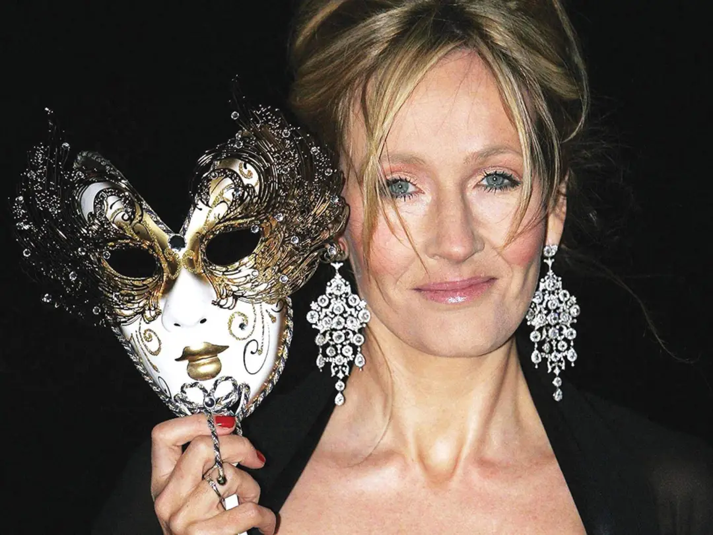
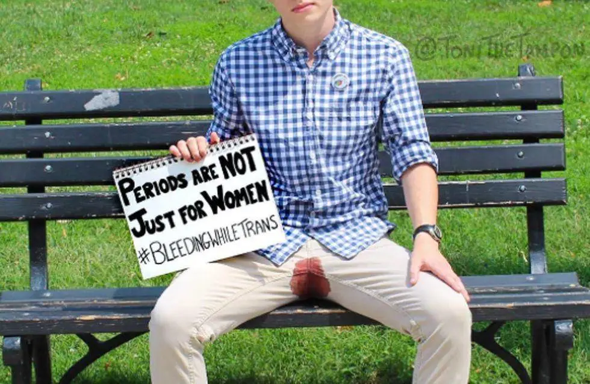
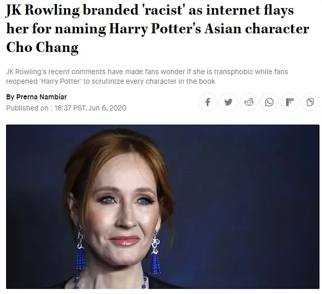

“哈利·波特”的演员们，站到了原著作者JK·罗琳（JK Rowling）的对立面.而54岁的罗琳，在被激烈批评之后，写了一篇长文，首次揭开她年轻时遭遇性侵和家暴的经历，以此申明自己站出来发声的理由。事情还要从上周末的一个争议开始。

来月事的人=女性？6月7日晚间，罗琳在推特上转了一篇文章——它的标题叫《为来月事的人创造一个更加平等的后新冠世界》。作者显然是为了表达对多元性别的尊重，用“来月事的人”（People who menstruate）代替女性（Women）一词，以便包含那种“心理性别为男但生理性别为女”的跨性别者、以及想变性成男人但手术还没完成者。罗琳在转发时，用调侃的语气发了个疑问：“‘来月事的人’，我确信对这种人是有个什么称呼的吧？”这条推特发出来后，反对的声音蜂拥而至，认为罗琳是阴阳怪气，在否定跨性别者的存在。
罗琳随后发了数条推特来回应：“如果性不是真实存在的，又何谈‘同性之爱’？如果性不是真实存在的，那么全球女性所面临的现实处境，也就被抹杀了。我认识也喜欢跨性别的人，但是抹去性的概念，很多人就没法有意义地讨论他们的生活。说出真相，并不代表仇恨。”但争议并没有停止，多方机构和人士都站出来，批评罗琳是在蓄意歪曲关于性别认知和跨性别者的事实。

少见的哈利·波特“内战”争论的声音里，最引人注目的是哈利·波特的利益相关者。哈利·波特电影的出品方华纳，和拥有IP运营的环球公园，都发表了圆滑的、正确的废话，大意是他们珍惜多样性、包容性的文化，倡导人们对所有群体的理解。而哈利·波特的“后浪”演员们，更有将是非曲直论个明白的激情。
这个议题在过去两年引起过轩然大波。本来，英国在2004年颁布过一个性别认知法案，承认跨性别，但手续繁琐而且要经过专业组织审核。2018年时，政府提出简化流程的法案，提议不需要医学证明、直接根据“自我认知”来更改法定性别。
一位叫Maya Fostater的税务专家对此表示反对。她在网上连续发表言论，担忧这种对“女性”法律定义的扩大，会让它失去意义，同时会削弱女性的权利，影响到对弱势女性的保护。Maya Fostater她还转发了一条新闻，讲一个犯人，生理性别为男性，但以女性身份生活了两年，做了变性手术但没有完成，“他”因此被送到女子监狱。结果，在那里性侵了两位女性狱友。Maya坚持认为，“性别是一种生物事实，无法改变。世界上只有两种性别：男和女。”在她看来，简化性别认证流程的法案，会危害到女性的权益。结果，这个“政治不正确”的观点让她丢掉了工作，而且，法庭支持了她原单位的做法，认为她对性别的观点在民主社会不值得任何尊重。

JK·罗琳是少数站出来支持Maya的名人，她发推说：“喜欢穿什么就穿什么。想怎么称呼自己就怎么称呼自己。作为成年人，只要彼此喜欢就可以同床共枕。你可以在平静和安全中，过最好的生活。但只因坚持“生理性别是真实存在的”，就要让女性丢掉工作？#我支持Maya”这次声援，让罗琳被群起指责，很多人把她划入歧视跨性别人群的激进女权派（TERF）。 罗琳为何要站出来？从过往的吵架来看，罗琳没怕过谁。这一次，她也说，“尽管我成为众矢之的——但我绝不低头！”
不过，争议的激烈程度，和众叛亲离的状况，也是空前的。然后，她拿出了一篇长文，来讲述自己为何坚持在这个话题上发声。在文中，她提到自己的慈善基金会，在重点关注女性和儿童，所以很清楚跨性别活动正在产生怎样的影响。她认为激进跨性别主义，会对儿童的教育和安全造成挑战。 她还以自己的经历，论证女性正在面临的问题。罗琳担心年轻女性希望变性的数量大幅激增，“十年前，想变性的大多是男性；但现在，完全反过来了——英国想要接受变性手术的小女孩增加了44倍。”变性的部分原因是被社会或家人的恐同所驱使。
世界是复杂的，每个人都有不同的过往，各自的梦想和恐惧，相关的利益和观点，它不是铁板一块，也不是非黑即白，所以，需要不断地沟通。正如《卫报》所提到的，英国缺乏对跨性别后发生的事情进行系统的追踪，罗琳所引用的论文本身也备受争议。罗琳这两年因为该话题受到网络暴力，同样，跨性别的人士也没少遭受。彼此之间本应该有更多的对话和理解。通过这种网络上的争吵，比着谁的声量大来影响决策，是十分危险的。而且，如果越过现实的混沌，在自己的理念上刻舟求剑，甚至口诛笔伐、让人闭嘴，只会把对方推向更极端的主张。同理心和理解力，都是稀缺品，很可能越来越是稀缺品。
回到顶部